1917—American Dressmaking Step by Step
by Mme. Lydia Trattles Coates
Chapter 6—Fastenings and Stitches
Lesson 36—Fastenings
In all work a fastening stitch is required. A knot at the end of the thread is used for a fastening in basting.
In hemming, fasten the thread with two or three back stitches taken under the fold of the hem. Do not catch the stitches through to the right side of the garment.
In work where there is no fold under which to hide the fastening, the same stitch used in continuing the work is taken over two or three times. For instance, if the running stitch is to be used, take two or three straight stitches over each other to fasten the thread. If the slant stitch is to be used, take two or three slant stitches over each other and continue with stitches of the same slant.
Avoid taking one kind of a stitch for the fastening, when the fastening is visible, and using another kind of a stitch, or a different slant of the same stitch, for the work which follows.
Lesson 37—The Knot
The knot at the end of the thread is used principally in basting.
To Make the Knot
- Hold the threaded needle between the thumb and forefinger of the right hand.
- Hold the end of the thread between the thumb and forefinger of the left hand.
- Wind the thread once around the forefinger of the left hand. This forms a loop.
- Roll the thread tightly between the thumb and forefinger, and with the end of the middle finger draw the loop downward into a small knot.
Lesson 38—The Straight Stitch
The Straight Stitch is the foundation of many other stitches, among them being the even and uneven basting stitches, the running stitch, etc.
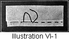To Make the Straight Stitch (Illustration VI-1)
The needle passes over and under the material on either the line of the work or in a straight position against the line of the work.
Lesson 39—Even Basting
Even Basting stitches should be very carefully taken and should be used only for marking purposes or for the most particular work.
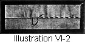To Make Even Bastings (Illustration VI-2)
- Knot the thread.
- Begin at the upper or right hand end of the work.
- Place the needle through the material, taking a straight stitch the exact length each succeeding stitch is to be.
- Place the needle again on the side upon which you are working, at the same distance from where the thread came through as the length of the stitch is on the opposite side. Then take a stitch on the under side the same length as the previous stitch.
Lesson 40—Uneven Basting
The Uneven Basting is used for any temporary holding together of edges of materials.
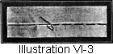To Make Uneven Basting (Illustration VI-3)
- Knot the thread.
- Begin at the top of the work or at the right hand end, and take a short straight stitch through the thicknesses of the material.
- Draw the thread two or three or more times the distance of the length of the stitch on the under side, and place the needle again taking a short straight stitch through the material.
The short stitch should not be taken more than one-half-inch in length.
This gives a long straight stitch on the side upon which you are working, and a short straight stitch on the under or opposite side.
Continue the work in the same manner.
Lesson 41—Combination Basting
The Combination Basting is used for temporary holdings which require a firmer, closer stitch than the uneven basting gives.
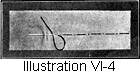To Make the Combination Basting (Illustration VI-4)
- Knot the thread.
- Begin at the top or the right hand end of the work.
- Take alternately long and short straight stitches.
Lesson 42—Diagonal Basting (Padding Stitch)
The Diagonal Basting is used to hold portions of material together in all dressmaking and tailoring.
It is a long diagonal stitch on the side upon which one is working (Illustration VI-5) and a short straight stitch on the opposite side (Illustration VI-6). It is also called the Padding Stitch when used in tailoring (Illustration VI-7).
To Make the Diagonal Basting (Illustrations VI-6 and 7)
- Knot the thread.
- Begin 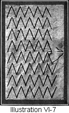at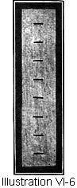 the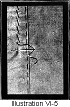 top of the work. Take a short straight stitch across the line of the work. (Illustration VI-5.)
- Continue by taking short straight stitches directly below this first stitch. (Illustration VI-6.)
When used in tailoring for the padding stitch the stitches should meet as shown in Illustration VI-7.
Lesson 43—The Running Stitch
The Running Stitch and the straight stitch are exactly the same. The straight stitch, however, is made coarse or fine, long or short as the occasion demands. The running stitch, correctly classified is a very fine stitch and is appropriate only for the most particular work. Its general rule is to go over and under each alternate warp and woof thread, depending, of course, upon the direction in which one is working, whether with or against the grain.
On very fine or closely woven materials, when working on a straight line, draw one of the threads and then the needle easily weaves over and under the remaining threads.
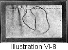To Make the Running Stitch (Illustration VI-8)
- Fasten the thread with very small back stitches. (Use a needle as fine as can be used with the material and a thread as fine as the needle will carry.)
- Pass the needle over and under as few threads at a time as possible and take up several of these small stitches on the needle. Then draw the needle through the material and continue in the same manner.
Lesson 44—The Back Stitch (Working Upward)
The Back Stitch is useful for fastenings and for firm hand work.
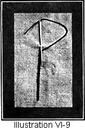To Make the Back Stitch (Working Upward) (Illustration VI-9)
- Begin at the lower end of the work.
- Fasten the thread on the under side and bring it through to the right side.
- Take a short straight stitch, keeping the needle pointing downward and bringing it out at the place where the thread was brought through from the under side.
- Continue with straight stitches taken just above each other, bringing the needle out each time at the exact spot where it was placed for the previous stitch.
Lesson 45—The Back Stitch (Working Downward)
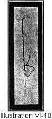To Make the Back Stitch (Working Downward) (Illustration VI-10)
- Begin at the top of the work and bring the needle through from the under side.
- Place the needle the stitch length above where the thread is brought through. Take a straight stitch downward bringing the needle out the stitch length below where the thread is brought through.
- Place the needle upward to the lower end of the first stitch. Bring the needle out an equal length below the thread. Continue with the same stitch.
Lesson 46—The Half Back Stitch (Working Upward) 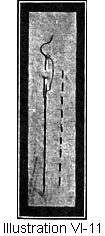Also called The Outline Stitch (Illustration VI-11)
To Make the Half Back Stitch (Working Upward)
- Begin at the lower end of the work.
- Fasten the thread on the under side of the material and bring the thread through to the right side.
- Take a short straight stitch with the needle pointing downward.
- Take the next stitch directly above the first one, letting the needle come out half the length of the stitch above the previous stitch which was taken.
This stitch makes rows of long straight stitches on the right side of the work and even straight stitches on the under or opposite side. Illustration VI-11 shows both the right and the under sides of the work.
Lesson 47—The Half Back Stitch (Working Downward) 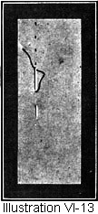Also called The Seed Stitch (Illustration VI-13)
The Half Back Stitch (working downward) is not only useful for firm hand work as in making seams, fastenings, etc., but is quite ornamental for a filling stitch in embroidery, and is also used in making tucks on silk or satin where there will be no strain.
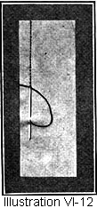To Make the Half Back Stitch (Working Downward) (Illustrations VI-12 and 13)
- Begin at the top of the work and bring the needle through from the under side.
- Take a short straight stitch above where the thread came through, and take a long stitch underneath.
- Continue taking short straight stitches just above where the thread comes out and long straight stitches under the work. The space between the stitches may be of any desired length.
Lesson 48—The Slant Stitch
The Slant Stitch is slanting on the side on which one is working and the opposite side. It is used to hem bias and irregular lines and in work where the line does not fall straight with either the warp or the woof of the material.
To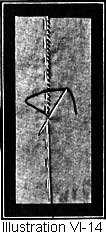 Make the Slant Stitch (Illustration VI-14)
- Begin at the top of the work.
- Fasten the thread with two or three back stitches under the fold of the hem.
- Bring the thread through to the top of the hem, close to the edge.
- Let the thread fall downward on a slant. Place the needle into the material the distance below where the thread comes out, which you wish the slant stitch to be. Keep the needle in a slanting position and pass it under the hem. Let the needle come out through the top of the hem close to the edge. Continue with the same stitch.
Lesson 49—The Straight Hemming Stitch
The Hemming Stitches are straight on one side and slant on the other. They are useful in hemming and finishing work on straight lines. (See slant stitch, Lesson 45, for irregular lines.) If one wishes the straight stitch to appear on the hem side and the slant stitch on the opposite side use the Straight Hemming Stitch.
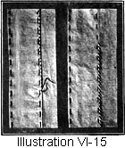To Make the Straight Hemming Stitch (Illustration VI-15)
- Begin at the top of the work.
- Fasten the thread under the fold of the hem with two or three back stitches.
- Bring the needle through to the top of the hem close to the edge.
- Place the needle into the material opposite the place where you brought through the thread.
- Place the needle in a slanting position under the hem and through the material.
- Bring needle out through hem close to the edge. Continue with the same stitch. Illustration shows both sides of the work.
Lesson 50—The Slant Hemming Stitch
If one wishes the slant stitch to appear on the hem side, and the straight stitch on the opposite side of the work use the Slant Hemming Stitch.
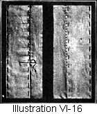To Make the Slant Hemming Stitch (Illustration VI-16)
- Begin at the top of the work.
- Fasten the thread with two or three back stitches under the fold of the hem.
- Draw the thread through to the top of the hem close to the edge.
- Place the needle into the material as shown in Illustration VI-16. The size of the stitch is determined by the distance between where the thread comes out and the needle is placed.
- Hold the needle in a straight, crosswise position and bring it out through the hem close to the edge.
Lesson 51—The Invisible Slip Stitch
The Invisible Slip Stitch is for quick finishing work and can be used on any line. It is one of the most valuable stitches for everyday work.
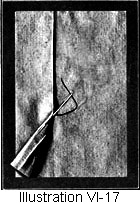To Make the Invisible Slip Stitch (Illustration VI-17)
- Baste the hem but not too near the edge.
- Begin at the top of the work and fasten the thread under the fold of the hem.
- Bring the needle out through the crease of the fold at the under edge of the hem.
- Place the needle straight up and down through the material under the edge of the hem. The needle should pick up one or two threads only with this stitch.
- Let the needle slip the desired distance under the hem. Bring it out through the crease of the turning of the hem and proceed as above directed.
On the right side of the garment this stitch shows only where the needle has picked up the one or two threads to hold the hem in place. On the hem side the stitch is entirely invisible.
Lesson 52—The Blind Stitch
The Blind Stitch is useful for invisible hemming and finishing work. Its name designates its character. When finished no stitch is visible on the hem side and no stitch is seen on the opposite side except where the needle has picked up one or two threads to told the hem in place.
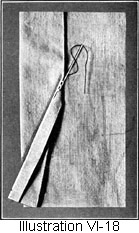To Make the Blind Stitch (Illustration VI-18)
- Baste the hem a little distance from the edge of the turning.
- Begin at the top of the work. Fasten the thread under the fold of the hem with two or three back stitches.
- Bring the needle out through the crease of the turning of the hem. Do not bring the needle through to the top of the hem or the work will not be invisible.
- Place the needle through the material under the edge of the hem and pick up one or two threads of the material under the hem.
- Take three or four fine running stitches in the turned under portion of the edge of the hem. Do not catch these stitches through the hem itself or into the material of the garment.
- Bring the needle out through the crease of the turning of the hem and continue as above directed.
Lesson 53—Top Stitching (Overcasting, Overhanding, and Whip Stitching)
Top Stitching is hand stitches taken on the edge of the work. The stitches may be very fine and close together, or they may be long and some distance apart. Top Stitching is also known under the names of Overcasting, Overhanding, and Whip Stitching.
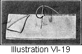To Do Top Stitching (Illustrations VI-19  and 20)
and 20)

- Hold the work in the left hand with the edges of the work upward.
- Place the needle from the back of the work with the needle pointing straight toward you.
- Draw the needle through.
- Bring the thread over the top of the work and again place the needle from the back and continue with the same over and over stitches. It is a matter of training, and personal choice, whether one works from left to right or from right to left. You can make your stitches either toward you or from you and still fully comply with the correct application of the principle of this work.
Lesson 54—The Catch Stitch
In some work, especially on heavy materials, a hemming stitch which can be taken on top of the hem is required. In such instances use the Catch Stitch, which, when neatly done, is a rather ornamental stitch, and is useful in needlework in many places other than in hemming.
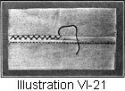To Make the Catch Stitch (Illustration VI-21)
If you will keep in mind that in catch stitching the point of the needle is always to the left, and that you work from left to right, you can not possibly have the slightest difficulty in making this stitch.
- Begin at the left end and fasten the thread under the hem or seam.
- Bring the thread through to the top and near the edge.
- Carry the thread diagonally across into the material, then take a straight stitch, remembering to keep the needle pointing to the left.
- Now carry the thread diagonally across into the hem or seam and take a straight stitch through but do not change the position of the needle. In this step it is optional with you whether you take the stitch through the hem or seam only, or through the material as well.
Examine the work. On the opposite side will appear short straight stitches, while on the hem or seam side you will have the effect as shown in the accompanying illustration.